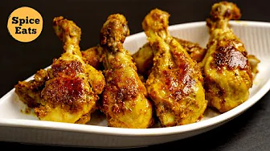

Chicken Malai Drumsticks

Chicken Drumsticks | Malai Chicken Drumsticks Recipe | Chicken Leg Fry | Chicken Tangdi Kebab | Chicken Kalmi Kabab | Chicken Tangdi Fry | Chicken Drumstick Kebab | Fried Chicken Drumsticks
Ingredients
Chicken
- Chicken Drumsticks, 6 nos- 500 gms
1st Marination:
- Lemon Juice- 2-3 tsp
- Salt- 1 tsp
- Ginger Garlic paste- 2 tsp
- Turmeric powder- 1/4 to 1/2 tsp
- Red Chilli powder- 1.5 tsp
2nd Marinade
- Hung Curd- 100 gms (5 tbsps net)
- Cashew paste- 8-9 cashew nuts
- Coriander powder- 1/2 tsp
- Cumin powder- 1/2 tsp
- Pepper Powder- 1/2 tsp
- Garam Masala powder- 3/4 tsp
- Oil- 2 tbsp
Other Ingredients
Preparation
- Wash and pat dry the chicken drumsticks.
- Make 2 cuts on the fleshy part of the drumsticks.
- Now add the items for the 1st marinade. Mix it well and set aside for around 15 mins.
- To make the Hung Curd, add around 300 ml of curd or plain yogurt in a strainer kept on a bowl and allow the water to drain completely. This should take around 1 hr.
- Now add all the ingredients for the 2nd marinade and mix it well, making sure the masala coats the chicken, and is rubbed inside the cuts.
- Cover and set aside in the refrigerator for around 3-4 hrs, preferably overnight.
Process
- Heat 2-3 tbsp oil in a pan and place the chicken drumsticks side by side. Fry the pieces on medium heat for around 3 mins.
- Flip the pieces and fry the pieces on the other side on medium heat for another 3 mins
- Keep turning and continue frying on low heat for a total of another 12 mins till browned and done.
Return to Home